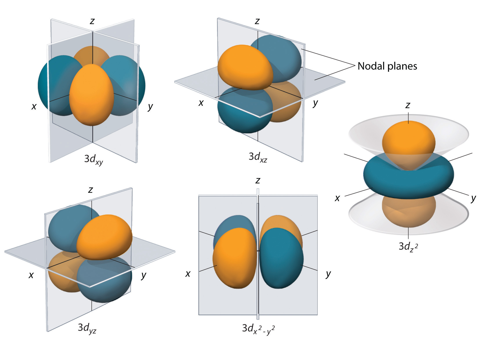

Molecular Orbitals
Molecular orbitals (MO) are a fundamental concept in quantum chemistry. They describe the probability distribution of finding an electron in a molecule. Unlike atomic orbitals (AO) which describe the distribution of electrons around an isolated atom, OMs are mathematical functions which encompass the entire molecule.
Formation of Molecular Orbitals
OMs are formed by linear combination of atomic orbitals. This combination can be constructive or destructive, which determines the type of molecular orbital formed:
- Binding orbital: When OAs combine constructively, the energy of the OM is lower than that of the original OAs. This allows the formation of a chemical bond between the atoms.
- Antibonding orbital: When OAs combine destructively, the energy of the OM is higher than that of the original OAs. This orbital does not favor chemical bonding and can even destabilize it.
Types of Molecular Orbitals
There are different types of OM, depending on the symmetry and the type of atomic orbitals involved:
- σ orbitals: formed by the frontal overlap of atomic orbitals.
- π orbitals: formed by the lateral overlap of atomic orbitals.
- Hybrid orbitals: formed by the linear combination of atomic orbitals of the same atom.
Molecular orbital diagram
A molecular orbital diagram (DOM) represents the different MOs of a molecule and their relative energy. It allows you to visualize the electronic structure of the molecule and understand its chemical properties.
Applications of Molecular Orbitals
OMs are used in many areas of chemistry, including:
- Molecule structure prediction: The geometry of a molecule is determined by the electronic configuration of the OM.
- Understanding chemical properties: The chemical properties of a molecule, such as its reactivity, can be explained by OM.
- Development of new materials: OM can be used to design new materials with specific properties.
Molecular orbitals are an essential tool for understanding the structure and properties of molecules. They allow chemists to predict the behavior of molecules and develop new materials with revolutionary properties.